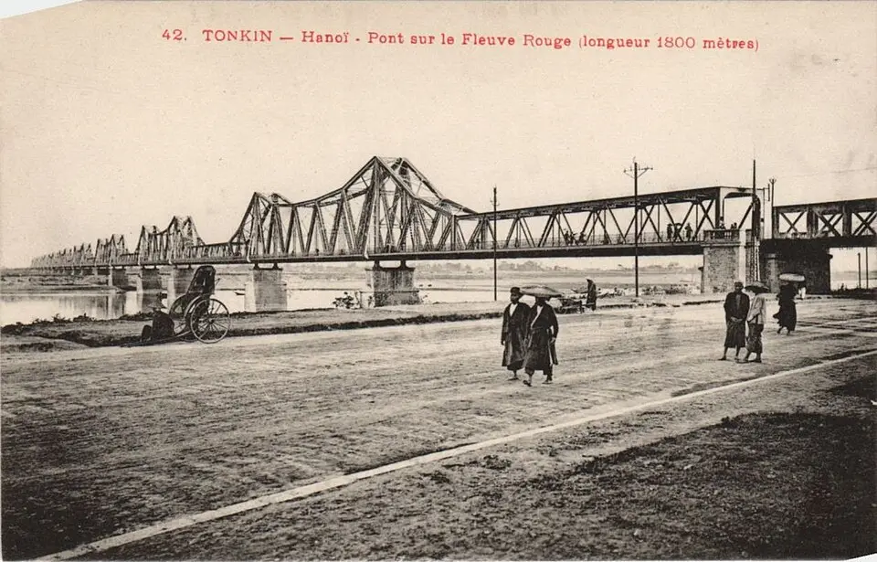
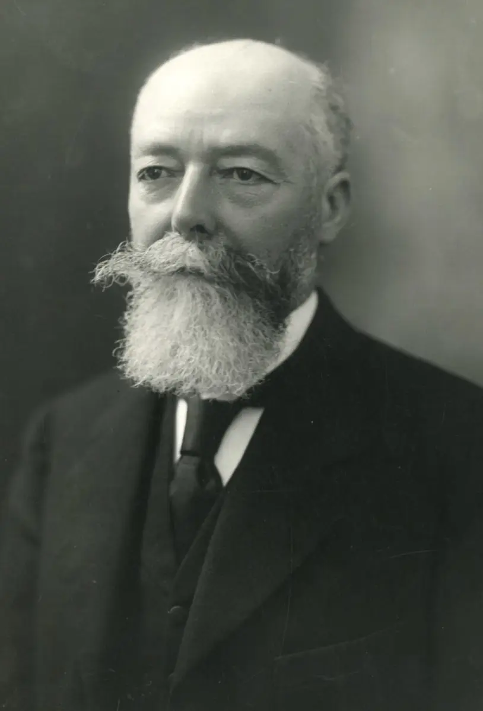
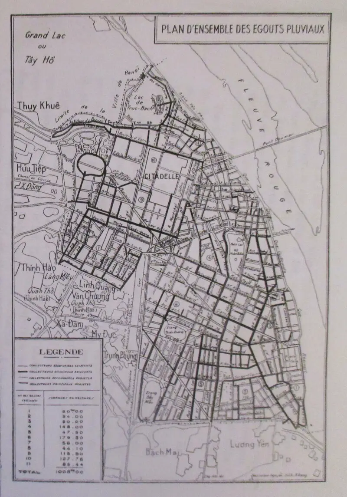

Hà Nội 1902: trả tiền cho đuôi chuột, nhận về trại nuôi chuột
Năm 1902, chính quyền Pháp ở Hà Nội treo thưởng 1 xu cho mỗi đuôi chuột để chặn dịch hạch. Ít lâu sau, người ta thấy chuột cụt đuôi chạy khắp thành phố, và ở ngoại ô mọc lên những trại nuôi chuột.

Mùa xuân năm 1902, người Pháp sống trong những biệt thự mới ở Hà Nội bắt đầu kể một chuyện khó tin: chuột bò lên từ ống thoát nước, có con chui ra từ chính bồn cầu trong nhà. Đó là nghịch lý của một thành phố vừa được "hiện đại hóa". Và cách chính quyền xử lý con chuột về sau trở thành một bài học kinh tế được kể khắp thế giới.
Một hệ thống cống mới, một vị khách không mời
Năm 1897, Paul Doumer sang làm Toàn quyền Đông Dương. Ông muốn biến Hà Nội thành thủ đô xứng tầm của Liên bang Đông Dương, và năm 1902 thủ phủ được dời từ Sài Gòn ra Hà Nội. Khu phố Pháp mọc lên với đại lộ rợp cây, biệt thự, phủ Toàn quyền, cầu Doumer (nay là cầu Long Biên) dài khoảng 1.700 m qua sông Hồng.
Dưới mặt đất là công trình Doumer tự hào: hệ thống cống ngầm. Đến khi ông rời Đông Dương tháng 3 năm 1902, Hà Nội đã có hơn 19 km cống, phần lớn nằm dưới khu phố Pháp. Khu phố cổ, nơi khoảng 90% dân số sống trên một phần ba diện tích, gần như không được hưởng. Người dân ở đó vẫn lấy nước ở vòi công cộng.
Với loài chuột, cống ngầm là thiên đường: không có kẻ thù, tối, ấm và nối thẳng vào nhà người giàu. Nỗi lo lớn hơn nằm ở bên kia biên giới. Đại dịch hạch thứ ba bùng ra từ Vân Nam, lan qua Quảng Châu, Hồng Kông, rồi Ấn Độ. Năm 1894, Alexandre Yersin tìm ra vi khuẩn gây bệnh. Năm 1898, Paul-Louis Simond chứng minh bọ chét trên chuột truyền bệnh sang người. Người Pháp ở Hà Nội biết rõ con chuột trong cống có ý nghĩa gì.
Những người thợ bắt chuột


Tháng 4 năm 1902, chính quyền thuê thợ bắt chuột người Việt xuống cống, trả tiền theo số con. Theo các báo cáo được trích lại, tuần cuối tháng 4 họ diệt được 7.985 con. Ngày 30 tháng 5 là 15.041 con. Ngày 21 tháng 6 là 20.112 con.
Con số đẹp, nhưng chuột sinh sản nhanh hơn. Công việc thì bẩn và nguy hiểm: lội trong phân, gặp rắn và rết, mà tiền công rất thấp. Tháng 7, bác sĩ Serez báo cáo rằng thợ bắt chuột đình công đòi tăng lương. Cư dân khu phố Pháp cũng phàn nàn vì cứ gặp những người chui lên từ nắp cống, người lấm bùn, tay xách hàng trăm xác chuột.
Người bắt chuột đã hiểu một điều đơn giản: giết con chuột là giết luôn nguồn thu tương lai.
Một xu một cái đuôi


Chính quyền chuyển sang cách khác: ai cũng có thể bắt chuột, mỗi con được thưởng 1 xu. Để khỏi phải nhận cả núi xác chuột, chỉ cần nộp cái đuôi.
Lúc đầu đuôi nộp về rất nhiều. Rồi nhân viên y tế bắt đầu thấy chuột sống, khỏe mạnh, chạy quanh thành phố mà không có đuôi. Người bắt chuột đã hiểu một điều đơn giản: giết con chuột là giết luôn nguồn thu tương lai. Cắt đuôi rồi thả nó về cống, nó sẽ đẻ thêm những con có đuôi. Có tin người ta mang chuột từ nơi khác vào thành phố. Cuối cùng, thanh tra y tế tìm thấy những trại nuôi chuột ở ngoại ô, nuôi chỉ để lấy đuôi. Chương trình thưởng bị hủy.
Sử sách nói gì
Chuyện này không phải giai thoại truyền miệng. Nó được sử gia Mỹ Michael G. Vann tìm lại trong lưu trữ thuộc địa Pháp và công bố năm 2003. Tuy vậy, các số liệu thời đó, từ dân số đến số chuột chết mỗi ngày, phần lớn chỉ là ước đoán. Con số "55 triệu con chuột" thỉnh thoảng được nhắc tới không có cơ sở chắc chắn.
Dịch hạch vẫn đến. Đến năm 1903, Hà Nội ghi nhận 159 ca, 110 người chết. Phần lớn nạn nhân là người Việt, chỉ 6 người Pháp mắc bệnh và 2 người chết. Một lý do là nhiều gia đình giấu người ốm vì sợ chính quyền ập vào nhà.
Hiệu ứng con chuột
Ngày nay, chuyện Hà Nội 1902 hay được kể cùng "hiệu ứng rắn hổ mang": chuyện chính quyền Anh ở Ấn Độ treo thưởng cho rắn chết, rồi dân nuôi rắn để lĩnh thưởng. Vann cho rằng chuyện rắn hổ mang không chứng minh được, còn chuyện chuột ở Hà Nội thì có giấy tờ, nên gọi là "hiệu ứng con chuột" mới đúng.
Bài học của nó vẫn dùng được: khi đo thành tích bằng một thứ có thể làm ra, người ta sẽ làm ra thứ đó, chứ không giải quyết vấn đề. Hà Nội năm ấy muốn ít chuột hơn, nhưng lại trả tiền cho đuôi chuột.